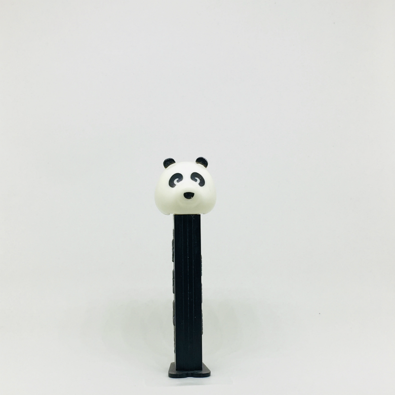
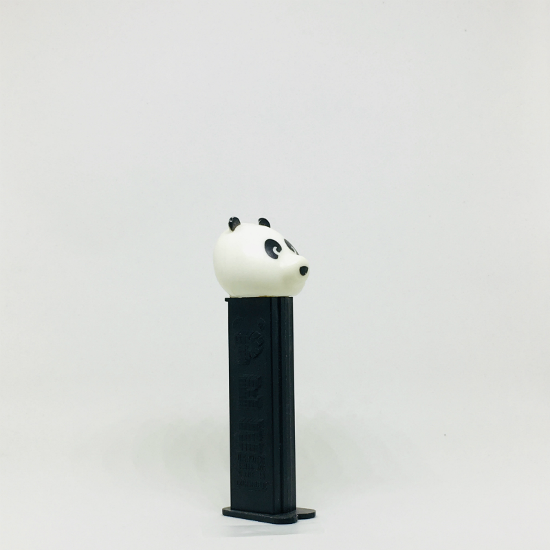
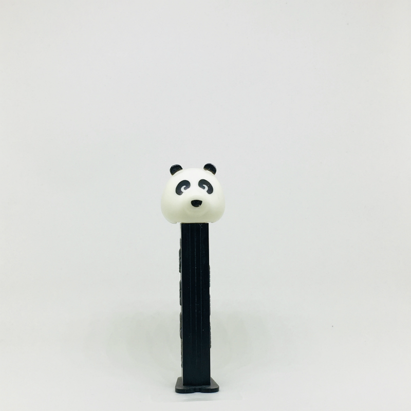
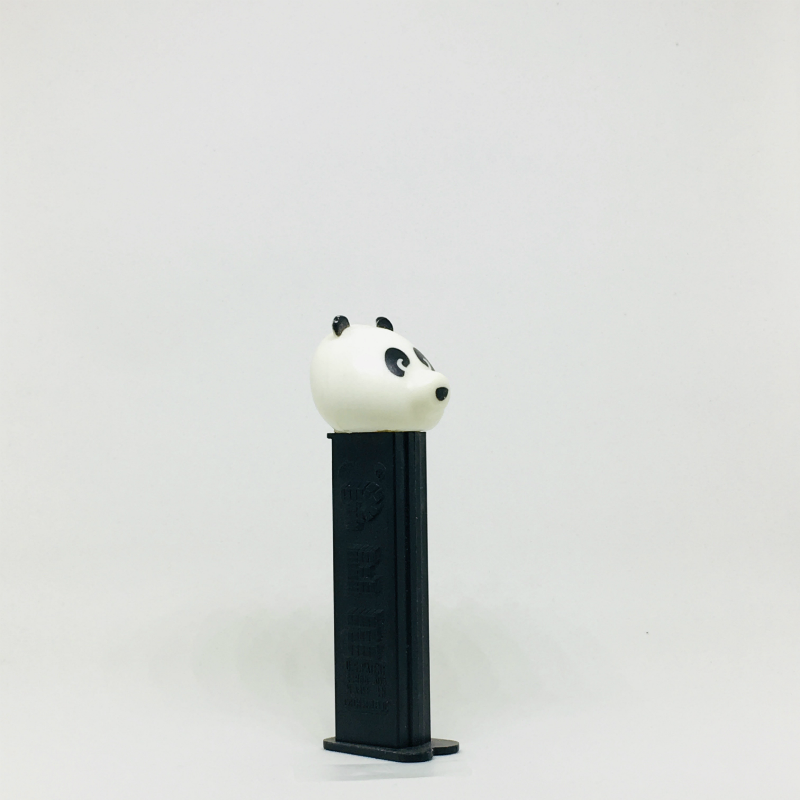

0
0 



Panda
Too legit... Too legit to quit (three times) Sweat running all over my chest (chest) I don't quit no! I just press harder (Yea!) than I ever did before going for The dreams that I have in store in my mind (mind) and I know That I'm makin it I gotta get mine and nobody's takin it away (No!) cause hammer don't play that you try to get mine Boy you better step back freeze (freeze) cause You don't want none I hustle for my muscle and you look Weak son (real weak) yea!... I'm goin for all that I can get Kickin at the top cause I'm too legit to quit...sing!.. Too legit... Too legit to quit (hey...hey...) Too legit...too Legit... Too legit to quit...(hey...) Too legit... Too legit to quit (too legit...) too legit... too legit to quit.. When I feel high post don't you play me close a dig 'em smack A get you back and I'll hit with a dose of oaktown power And charge you by the hour I'm shakin like a quake and funks Get devoured I choose to abuse, misuse and confuse Competitors who think they're makin up all the rules, fools In the game lame and insane it's a shame I gotta do this but I remain the same unchanged gettin better never known As a sweater kickin it at the top cause I got myself together So roll with a guy who's physical and fit knows the time And too legit to quit...sang! Too legit... Too legit to quit (hey...hey...) Too legit...too Legit... Too legit to quit...(hey...) Too legit... Too legit to quit (too legit...) too legit... too legit to quit.. Step to the rhythm of a sho-nuff winner (winner) I been Here before (yo!) I ain't no beginner (word) but I been new Tried and true survival of the fittest yo!..it brought me through My crew (talk) we're ready to strike trained for the mission So believe the hype and sweat it (sweat it) cause you're gonna Regret it the day that you dissed us you'll wish you never met us You remind me of a real short story one hit record and you Star to bore me get ready cause this is it your crew is Through and we too legit to quit...sang!.. Too legit... Too legit to quit...Too legit... Too legit to quit Too legit... Too legit to quit...Too legit... Too legit to quit Get buck...get buck...get buck...get buck...get buck...(many times) My people we don't know defeat we crush the strong and Percolate the weak daily (everyday) we make our moves to Improve our groove because we love to rule where we Lay yo!..(Yo!) work and play we started at the bottom and Now we're leading the way and yea!..(yea!) I'm havin a fit kickin it At the top because I'm too legit to quit...sang!.. Too legit... Too legit to quit (hey...hey...) Too legit...too Legit... Too legit to quit...(hey...) Too legit... Too legit to quit (too legit...) too legit... too legit to quit.. Hey...hey...hey...hey... too legit to quit.. too legit to quit. We're rolling on...we're rolling on...we're rolling on...we're rolling on.. He's on top...he's on top...he's on top...he's on top.. Goin to burn it up...goin to burn it up...goin to burn it up.. Goin to burn it up.. Too legit to quit...too legit to quit We're rollin on..hey..hey..hey...too legit Too legit... Too legit to quit (hey...hey...) Too legit...too Legit... Too legit to quit...(hey...) Too legit... Too legit to quit (too legit...) too legit... too legit to quit..